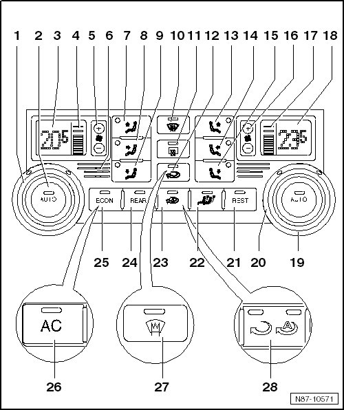
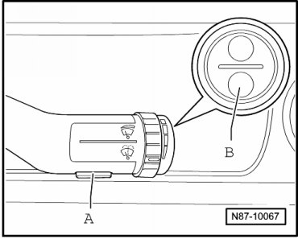
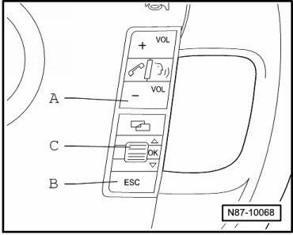

4 Zone A/C Display Control Head with Climatronic Control Module
4 Zone A/C Display Control Head with Climatronic Control Module

1 Temperature regulator, left
• Change front left temperature setting by turning.
2 AUTO button, left
• In automatic mode the Climatronic maintains the selected front left interior temperature automatically. With this setting the vent air temperature, the blower speed and the air distribution are controlled automatically.
3 Display for selected interior temperature, left
• Can be changed from degrees Celsius to degrees Fahrenheit and vice versa --> [ Convert degrees Celsius to Fahrenheit in vehicles
with menu control elements in windshield washer lever. ]
4 Display for blower speed, left
• In automatic operation the actual blower speed is displayed.
5 Button for setting blower speed, left
6 Instrument panel interior temperature sensor
• Cannot be replaced separately
7 Button - upper air distribution
8 Button - center air distribution
9 Button - lower air distribution
10 Defrost button
11 Push button for rear window defroster
• Rear window defroster remains on for 4 to 20 minutes, depending on exterior temperature.
12 Button for air recirculation
• Press button for recirculating air function to prevent polluted air from entering interior.
• Heated front windshield function can be controlled by this button, depending on vehicle equipment.
13 Button - upper air distribution
14 Button - center air distribution
15 Button - lower air distribution
16 Button for setting blower speed, right
17 Display for blower speed, right
• In automatic operation the actual blower speed is displayed.
18 Display for selected interior temperature, right
• Can be changed from degrees Celsius to degrees Fahrenheit and vice versa --> [ Convert degrees Celsius to Fahrenheit in vehicles
with menu control elements in windshield washer lever. ]
19 AUTO button, right
• In automatic mode the Climatronic maintains the selected front right interior temperature automatically. With this setting the vent air temperature, the blower speed and the air distribution are controlled automatically.
20 Temperature regulator, right
• Change front right temperature setting by turning.
21 REST button
• When residual heat function is switched on the residual heat of engine is pumped by a coolant pump to the heat exchanger.
22 Air conditioning synchronization button
• This button transfers all driver's air conditioning settings to the other seats.
23 Button for automatic recirculating air
• Press button for automatic recirculating air function to prevent polluted air from entering interior.
• Recirculating air is switched on automatically under the following conditions:
• When the windshield washer system is operated.
• When Sensor For Air Quality (G238) is activated.
• When engaging the reverse gear this function is only active for 2 minutes after starting the engine
• Blower speeds on A/C Control Head (E87).
• A/C Control Head (E87) "OFF"
24 REAR button
• By pressing this button, rear seat air conditioning settings can be adjusted from the front control unit.
25 ECON button
• Press button to switch air conditioning on and off.
• In "ECON" mode, the A/C compressor is set to minimum output and the heater and air distribution continue to be controlled automatically.
26 AC button
• If the AC button is deactivated, the compressor is set to almost no delivery. If the AUTO button is activated, the heating and ventilation mode will be controlled electronically.
27 Windshield defroster button
• optional on vehicles with windshield defroster
28 Air recirculation/automatic air recirculation button
• pressing the button switches the air recirculation on and prevents uncleaned air from the outside from getting into the passenger compartment; pressing the button again switches on the automatic air recirculation, which prevents polluted air from getting into the passenger compartment
• the setting is recognizable on the LED above the symbols
• This button is used for two purposes on vehicles with windshield defrosting.
Convert degrees Celsius to Fahrenheit in vehicles with menu control elements in windshield washer lever.

- Press rocker switch B on windshield washer lever longer than 2 seconds until "Comfort Setup" main menu is shown inverted. Press rocker switch B up or down to select menu item " Units". The menu is called up by pressing the A button.
Convert degrees Celsius to Fahrenheit in vehicles with menu control elements in multi-function steering wheel.

- Press button A or B until " Comfort Setup" main menu is shown inverted. Turn thumb wheel C to select menu item "units". The menu is called up by pressing thumb wheel C.